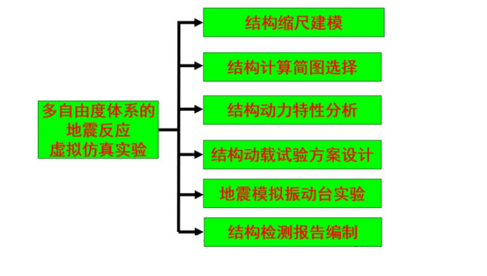

该虚拟仿真实验以地震模拟振动台实验为核心，研究多层框架结构的自振频率、振型、阻尼等参数，在多遇 7，8，9 度地震作用下结构的地震反应、破坏现象。为达到预期实验目的，结合多层框架结构所在场地性质，拟选用三类地震波作为振动台台面输入波形：
第 I 类：根据地震危险性分析得到的人工地震波，分为多遇地震三组。这种波形通过 GSRevit 建模设计提取人工地震波。第 II 类：天然地震记录，从 PEER（太平洋工程地震研究中心，http://peer.berkeley.edu/peer_ground_motion_database）下载的地震波数据，进行强震记录分析。第 III 类：拟合规范反应谱的人工地震波。
为得到以上三种波形，该实验在地震模拟振动台实验模块之前，设计了多自由度结构体系结构缩尺建模、结构计算简图选择、结构动力特性分析、结构动载试验方案设计结构检测报告编制等模块，以上 5 个模块和地震模拟振动台实验模块共 6 个模块构成“多自由度结构体系的地震反应虚拟仿真实验”（如图 2-1）。通过实验，使学生不仅加深对结构特性、计算计算简图、结构缩尺建模、结构动力分析的方法，和地震波的认识、了解反应谱的拟合绘制方法，进一步掌握地震作用的计算，熟悉振动台结构和地震模拟振动台实验过程，更可以提高学生的抗震设计能力。
